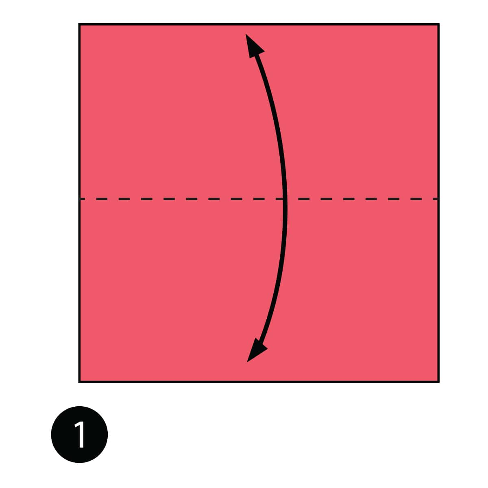
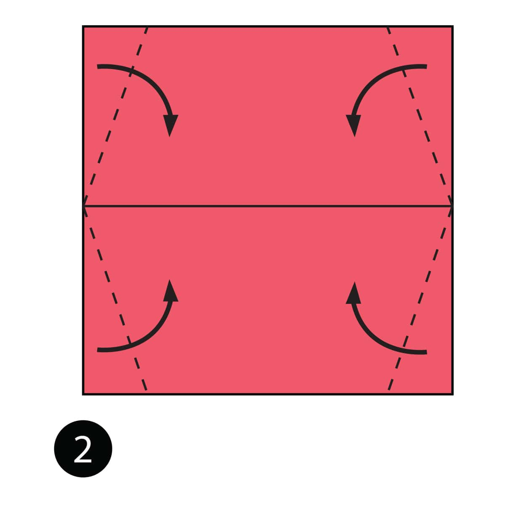
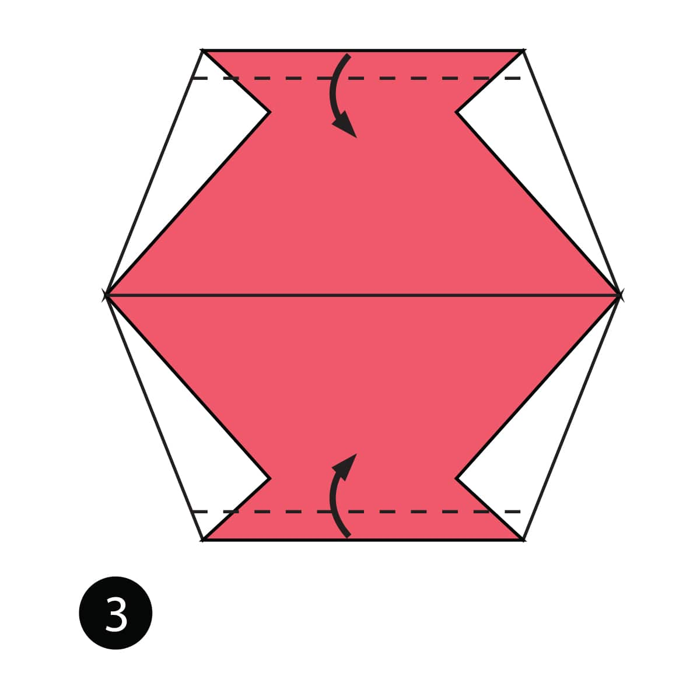
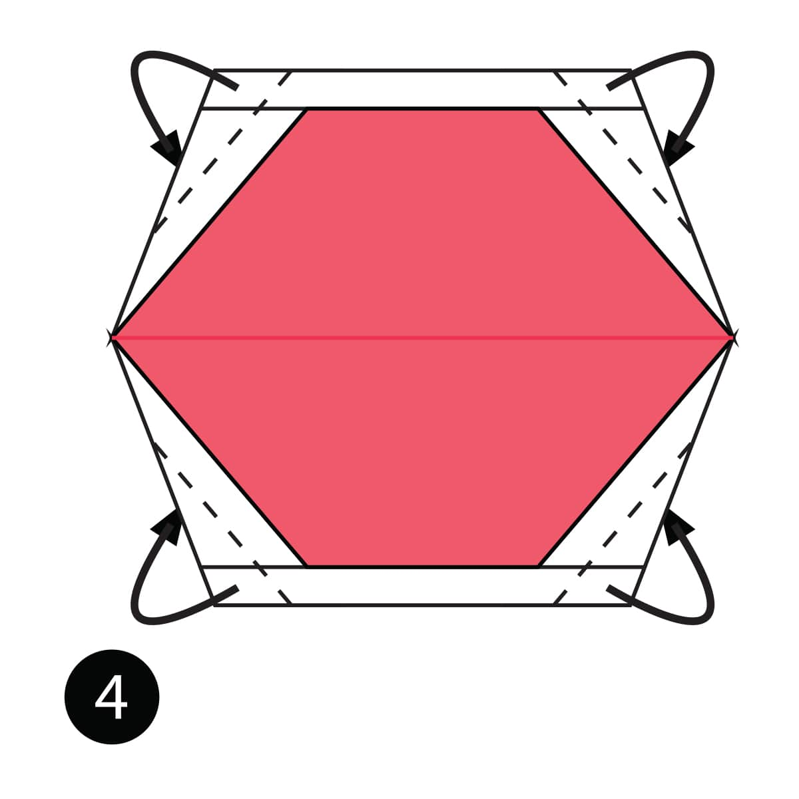
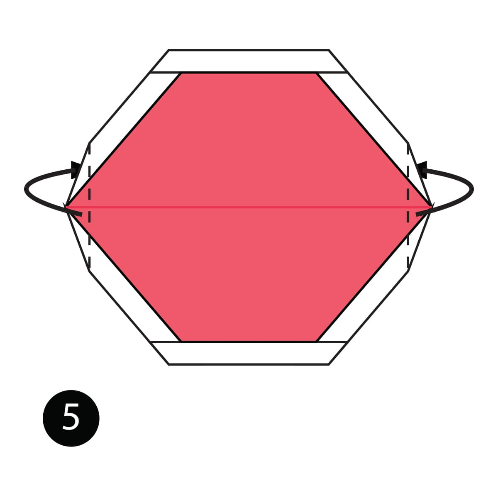
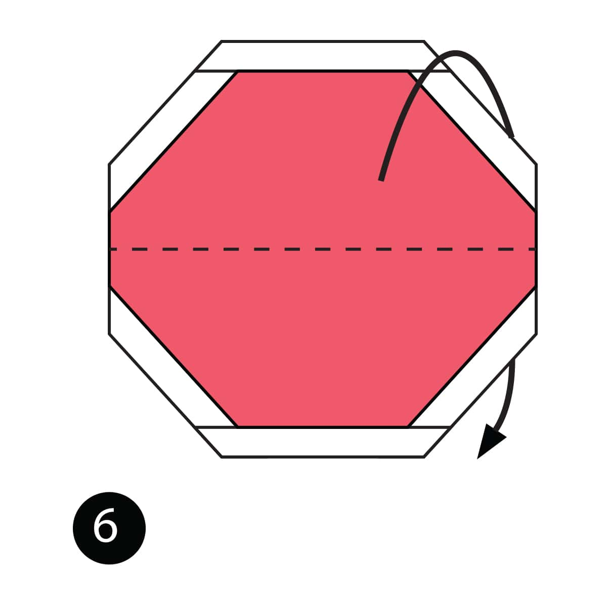
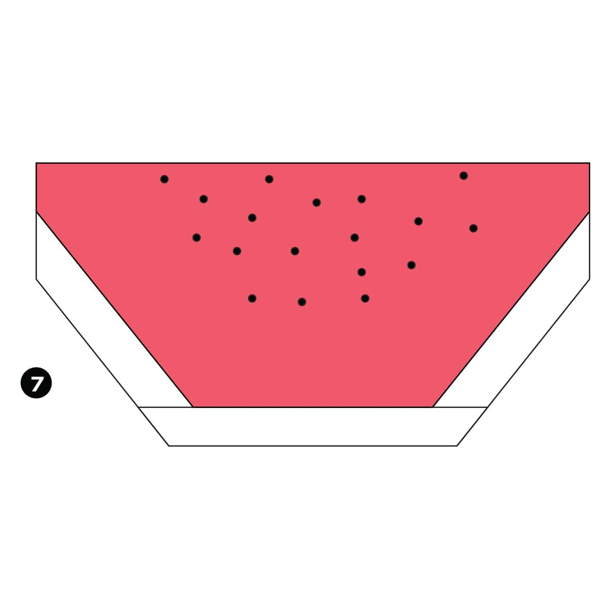

Step 1
Fold the paper in half and then unfold it.

Step 2
Fold the corners in along the dotted lines.

Step 3
Fold the top and bottom in along the dotted lines.

Step 4
Fold all the corners behind along the dotted lines.

Step 5
Fold the sides behind along the dotted line.

Step 6
Fold the paper in half in behind.

Completed
The complete watermelon slice